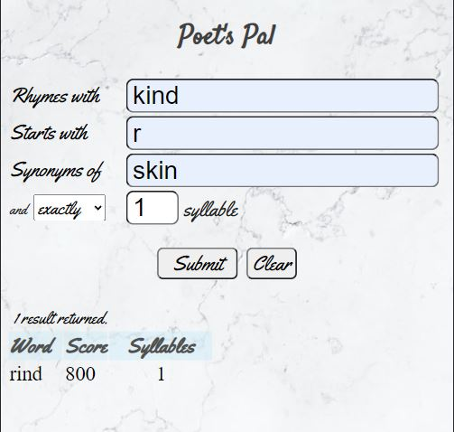
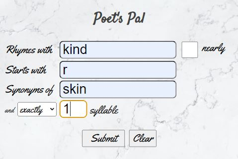

Eugene C. Olsen, Section 7, Fall 2021
Tzu-li and Tzu-ssu were boasting about the size of their latest programs.
‘Two-hundred thousand lines,’ said Tzu-li, ‘not counting comments!’ Tzu-ssu responded,
‘Pssh, mine is almost a million lines already.’
Master Yuan-Ma said, ‘My best program has five hundred lines.’
Hearing this, Tzu-li and Tzu-ssu were enlightened.
— Master Yuan-Ma, The Book of Programming
Like Master Yuan-Ma's best program, my final project, Poet's Pal, has about 500 lines of code.
This document contains everything that was asked by the assignment and more. It is lengthy and detailed — perhaps more lengthy and detailed that the instructor would like to read.
The author would like to call the reader's attention to the Map of Grading Rubrics to Code, below. The section maps the stated grading rubrics to modules, functions, methods, and event handlers that address and fulfill each grading rubric, with hyperlinks to the code on GitHub.
Poet's Pal is a small, mobile-friendly one-stop Web app for the discovery of basic literary devices based on specific criteria, such as rhyme, alliteration, and synonyms, for use by poets, songwriters, and other wordsmiths. It is more than just a rhyming dictionary and thesaurus, though it is these things; it uniquely allows the user to search by combinations of these devices and limit the results by the number of syllables — a handy feature when the wordsmith has a specific number or range of syllables to work with.
The user interface of the Poet's Pal has two sections:
The search engine for the Poet's Pal is the Datamuse API.
The Poet's Pal is a Web app that is mobile-friendly in portrait mode. The upper part of the user interface is a form with four input fields to define a word search, a Submit button to start the search, and the lower part is a table that displays search results, as shown below:
As seen in the example above, you can fill in any or all of the input fields. You can then click or tap the Submit button or press the Enter key and the app will search for the criteria entered and display any results in a table below the submit button.
Options for syllable selection are "less than" and "exactly", selectable in the drop-down list to the right of the word "and" in the last line of input fields. Note: Since the number of syllables is returned only when rhyming is involved, the "syllable" fields are disabled when nothing is entered in the "Rhymes with" field.
Finally, tapping or clicking the Clear button will clear all of the fields and help you start with a clean slate.
Please see the CSS section of Grading Rubrics to Code, below.
In the Master Mobile UX videos, assigned in Week 1 of this WDD330 course, we learned about designing mobile-first. The very next week at work, a customer, Cisco Systems, asked us to make a previously delivered Web app "mobile-friendly" after the fact. I found out first-hand that it is much easier to design mobile-first than to take an app designed for tablet or Web and make it mobile-friendly later.
Therefore, as I began to write proof-of-concept UI code for the Poet's Pal, I did so using the device tools in Chrome.
One of the major design goals has been to keep the app simple and functional. There is always the temptation to make things more complex. Sometimes I resisted the temptation to add more "whistles and bells" and sometimes I did not.
The Model-View-Controller (MVC) pattern was considered but the model is so small that it didn't seem useful or helpful to make it a class. The View code is complex and extensive enough that putting it in a class made very good sense. A controller class seemed to be an unnecessary layer of complexity for this use case, so a controller class was not created. Rather, the model and view are coordinated directly in the event handlers. All event handling is done in main.js. What we ended up with is the separation of concerns in a Model-View pattern, coordinated by the event handlers rather than in a controller class.
The Datamuse API sometimes returns results that are not "safe for work," family friendly, or appropriate for BYU. I decided to filter out such results. I found an Open Source list of profane words by Zac Anger, which I encoded to Base64 so I didn't have to look at the words. This list is used to filter profanity out of the results.
A marbled background image was added to "dress the app up" a little bit without being gaudy or distracting.
The final implementation of the Poet's Pal varies only in small details from the original concept. The final result matches the original concept in every major respect.
One exception to this is the handling of imperfect rhymes, also known as "near-rhymes." Originally, the app displayed a checkbox to the right of the "Rhymes with" input field with a label that said "nearly" to the right of the checkbox, as shown below:
Usability testing with friends and family showed this to be confusing. One of my sons suggested that I display perfect as well as any imperfect rhymes and just dislpay the words that rhyme imperfectly in italics.
In the final delivery of the app, the checkbox and its label have been removed and perfect rhymes are displayed first in the results table, followed by the list of imperfect rhymes. Again, all words that are deemed by the API to rhyme imperfectly are italicized.
The Datamuse API is easy to use in its raw form but the output JSON is unformatted. It is easy to enter the url and query parameters for the Datamuse API in the address bar of a browser and get the results on a Web page. The Poet's Pal was conceptualized to make input even easier and intuitive, and the output readable. The final implementation of the Poet's Pal achieves these goals.
This section maps the grading rubrics to specific modules and functions in the code. The entries are meant to be representative and not exhaustive.
There are four JavaScript modules in the Poet's Pal:
Below is a list of specific JavaScript grading rubrics mapped to module and function:
buildQuery() and getWordList() functions.
renderList() and _renderList() methods. The createTableHeader()
method also contains some logic, buiding the results table header based on the content of the JSON
objects returned by the API.
change event handler for the "exactly" | "less than" dropdown conditionally alters the acceptable
values for the numeric input field to its right. This is found in
main.js.
renderList() and _renderList() methods
of the View class in
view.js.
id="rhyme") has text entered into it.
In order to make the group of controls appear to be disabled as well as being
actually disabled, the colors for the enclosing <div> are changed
to a light gray. This can be found in the enableSyllables() and
disableSyllables() in
view.js.
min attribute of the numeric input field for number of syllables.
This code is found in the change event handler for the "nSyl" dropdown in
main.js.
renderList(), displayError(), clearError(),
displayNumberOfResults(), clearInfo(), and clear() methods
of the View class in
view.js.
It is accomplished by adding or removing the hidden class to the classlist of
the several elements involved.
The /words endpoint of the Datamuse API
is used with various query parameters depending on user input. As noted in the
JSON section, below, two calls are made to the API when rhymes are requested.
API calls typically respond in less than 70 milliseconds.
All styles in CSS are found in the file styles.css.
:root to define common values in variables.<html> tag. All other
sizes are defined in em.
@media query that shrinks the elements for smaller screens.
Since all sizes are in em, only one simple media query was needed.
All controls and fonts shrink proportionally for smaller screens.
tr:nth-child(even) to provide subtle striping for ease of reading
the results table.
<footer> at the very bottom of the screen regardless of
the vertical screen size.
:first-of-type, :last-of-type, :first-child,
and :last-child to provide justification and padding to enhance the readability
of the results.
class="hidden" with display: none; to selectively hide elements as needed.:hover pseudo-class selector is used for input fields and buttons.
The response from the Datamuse API
is an array of JSON objects. The content of those JSON objects varies depending on the query
sent to the API, which in turn, depends on the fields filled out by the user. The logic for parsing
and rendering the arrays of JSON objects is found in the View class in view.js, specifically in the
public renderList() and the private _renderList() methods.
When the "Rhymes with" input field is filled by the user, two API calls are sent to the API:
All event handlers are found in main.js as well as pseudo-class selectors in styles.css. In order of appearance, they are:
submit for the input form.change for the number of syllables input field. If "exactly" is chosen
in the drop-down to the left, the minimum number of syllables can be 1, otherwise,
the minumum number of syllables for "less than" must be 2.
input event is handled for each text input field. At a minimum,
it clears any error and information text. There is additional processing
for the following fields:
click event for the Clear button, which clears all fields.No local storage is used in the Poet's Pal app.
The Datamuse API is easy to use and there were few challenges. The couple of challenges I did encounter were related to CSS and styling.
float: left style for the "nearly" checkbox and its label.
Then usability testing showed that the checkbox was confusing, so it was ultimately discarded
and near rhymes are always requested when a rhyme is requested. Perfect rhymes are displayed
first, followed by imperfect or "near" rhymes.
Words that rhyme imperfectly are displayed in italics.
Here are a dozen. There are probably more, but this is a representative sample:
document.createElement()
and appendChild() methods,
as we did in the Great Hikes and Star Wars API activities.
fetch() call to the Datamuse API was taken nearly verbatim from
the Week 11 getJSON() starter code for the JWT Team Activity, with the addition
of the throw from the modified makeRequest() function.
And now, we give you <drum roll> the Poet's Pal.